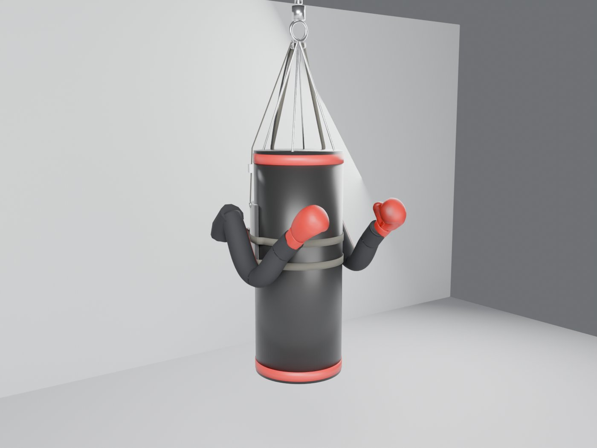
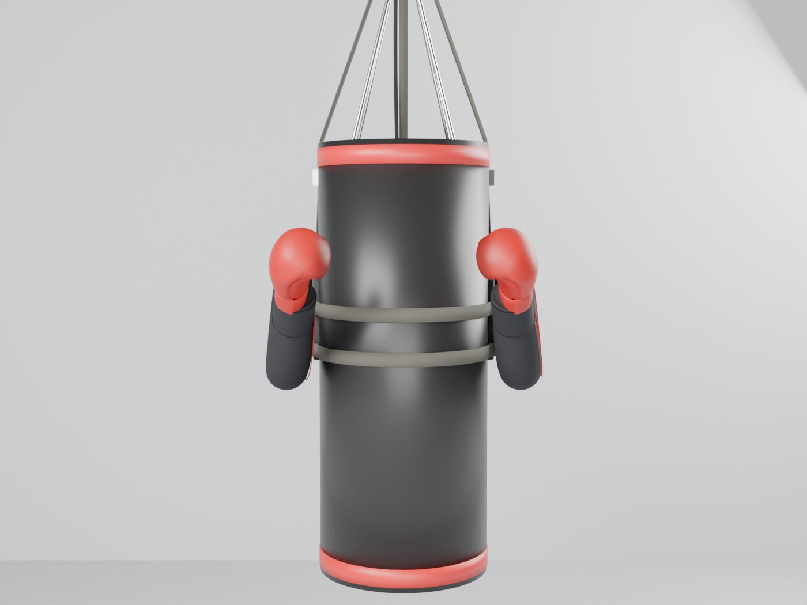
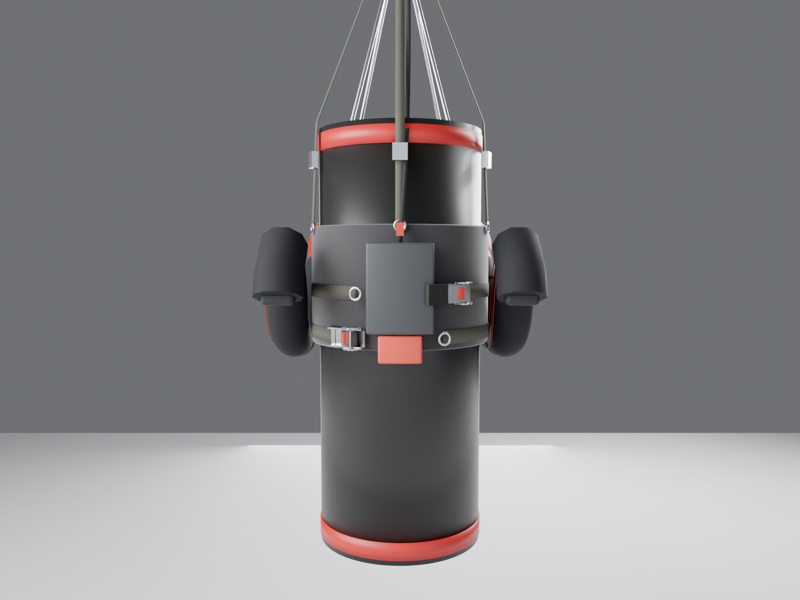
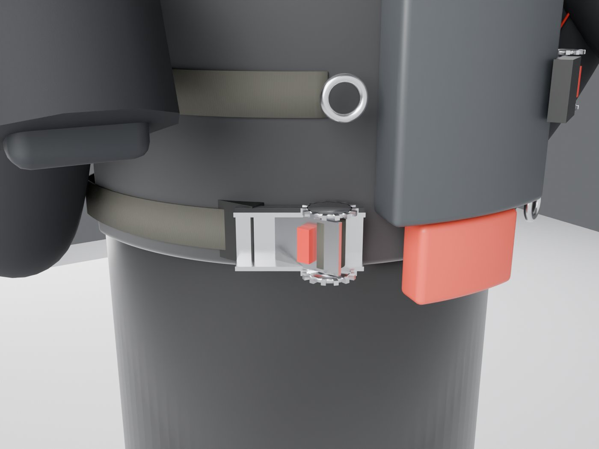
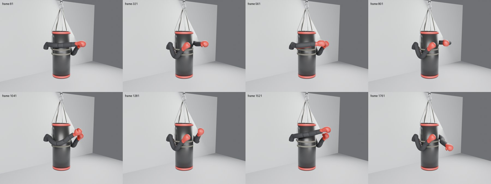
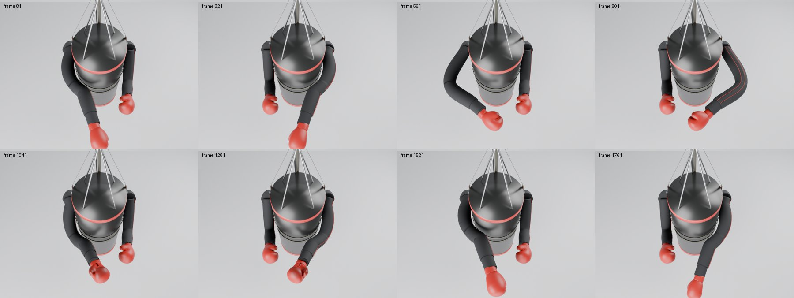

01 — Notice
02 — What Model A is
- Rear padded saddle wrapping about 170° of the back of the bag, carrying the arm roots and pack.
- Two parallel 38 mm canvas straps, 120 mm apart, each with a crank ratchet. The ratchets sit on the rear saddle beside the pack (about 31° either side of back center). No hardware on the front.
- Two soft arms copied 1:1 from Model B (N1, the original integrated trainer). Same bladders, sleeves, foam, wrist and glove. Only the root mount is new: fixed at back ±56°, no rotating ring.
- Narrow rear pack with compressor, tank, valves, board and sensors, plus a slide-in removable battery.
- Vertical tether to the chain ring as secondary retention.
- Same app and handheld as Model B, the original integrated trainer.
All rigid parts (arm flanges, carrier tubes, manifolds, ratchets) are at the rear, behind padding. Estimated kit mass 23.5 lb (ASSUMPTION; arms not yet weighed), ceiling 30 lb. Foam and cover fabric are not chosen.
03 — Compatibility rule
| Requirement | Value | Basis |
|---|---|---|
| Hanging | Chain-hung with top ring or swivel | Decision 27 Sep. Freestanding later |
| Diameter | 16 to 19 in at launch; 19 in design point | Bag survey: 19 in is the widest standard cylindrical bag |
| 13 to 15 in bags | Later, with a root spacer | ASSUMPTION |
| Weight | 80 lb minimum, 100 lb+ recommended | Tilt estimate + survey |
| Length | 42 in minimum | ASSUMPTION |
| Shape | Cylindrical only | Bag survey |
04 — Visual review (v5 model)
Renders from build_model_b_v5.py. Arms are the N1 objects from Model B, the original integrated trainer, copied onto this kit. Bag is 19 in. Colors, style, and shoulder position are this existing kit, not a new arm.




Model B strike frames on Model A


Films
960×540, 24 fps. Arm motion is the Model B N1 strike animation on the locked v5 mount. No new airflow or bag physics is simulated.
05 — Arm clearance
Every 8th frame of the full Model B strike animation (1–1920) was checked against a rigid 19 in cylinder. At the first mounting distance the arms cut into the bag by 8–13 mm at guard and up to 28 mm in strikes, so the roots were moved out 46.5 mm (root center about 150 mm off the bag surface). Result: minimum 14.1 mm (left, frame 1081) and 16.4 mm (right, frame 1273), against about 4 mm on Model B. Arm geometry, stroke and reach are unchanged. Not covered: cover bulge under strap tension, bag deformation and motion scatter (T-10). Data: clearance_v5.json. This is a model measurement, not a physical test.
06 — Status table
| ID | Item | Severity | Status | Path to close |
|---|---|---|---|---|
| MB-01 | Saddle turning under arm reaction | High | OPEN | Paper margin about 23x (E1). T-01 |
| MB-02 | Tilt and balance | Medium | OPEN | 1.2–2.2° on paper (E2). T-02 |
| MB-03 | Tracking on a swinging bag | High | OPEN | Controls spec. T-03 |
| MB-04 | Runtime per pack | Medium | OPEN | 1.0–2.4 h on paper. T-08 |
| MB-05 | Pack impact and vibration | High | OPEN | T-07 |
| MB-06 | Strap, ratchet and tether loads | Medium | OPEN | T-06 |
| MB-07 | Cover wear | Low | OPEN | T-09 |
| MB-08 | Arm clearance to bag | High | CLOSED IN MODEL | 14 mm minimum. Physical T-10 |
| MB-09 | Root standoff bending (150 mm) | Medium | OPEN | E5 + T-12 |
07 — Estimates (ASSUMPTION inputs)
- Saddle grip: about 1500 N·m from two straps against 65 N·m of arm reaction, about 23x on paper. Wet covers are the risk.
- Tilt: 2.2° at 80 lb, 1.8° at 100 lb, 1.2° at 150 lb, trimmed with adjusters.
- Swing from one arm push: 10–17 cm. Tracking target 30 cm and 10°.
- Root bracket: about 65 N·m per root at 100 N glove load.
- Runtime: 1.0–2.4 h per 90 Wh pack.
08 — Deep links
These files keep their names. They are the same papers. The public name of this kit is Model A.
- MODEL_B_SPEC_v1.md · Architecture and requirements
- MODEL_B_SOFT_ICD_v1.md · Soft arm interface (for Soft review)
- MODEL_B_ESTIMATES_v1.md · Paper estimates
- MODEL_B_SAFETY_v1.md · Safety hazard review
- MODEL_B_BOM_DFM_v1.md · BOM and DFM (no prices)
- MODEL_B_TEST_PLAN_v1.md · Test plan (parked)
- MODEL_B_BAG_SURVEY_v0.md · Bag survey (published maker specs)
- MODEL_B_CONTROLS_v0.md · Controls and perception
- MODEL_B_CHANGE_NOTES.md · Design change history v0 to v5
- MODEL_B_SPEC_v0.md · Superseded v0 spec (collar and ring)
09 — Decisions log
Written when this kit was filed under the paper name Model B. The public name is now Model A. Model B is the original integrated trainer. IDs in the notes are unchanged.
- 27 Sep: GO on this kit. Shares the app with the original integrated trainer. Hanging bags only at launch.
- 28 Sep: Arms are the original integrated trainer's N1 arms, copied, never remodeled. No shrinking without proof of no performance loss.
- 28 Sep: 19 in bag design point; 16–19 in fit rule at launch.
- 28 Sep: Two parallel canvas straps with ratchets at the rear beside the pack.
- 28 Sep: Arm roots moved out 46.5 mm for 14 mm minimum bag clearance.
- 28 Sep: v5 shape locked.